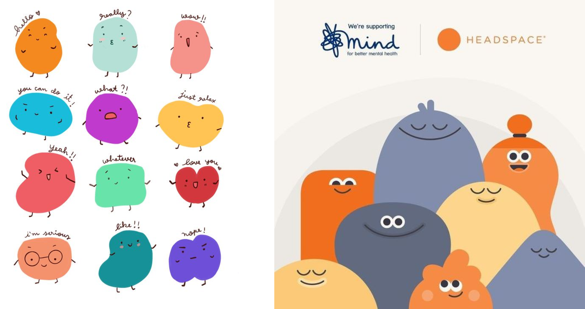
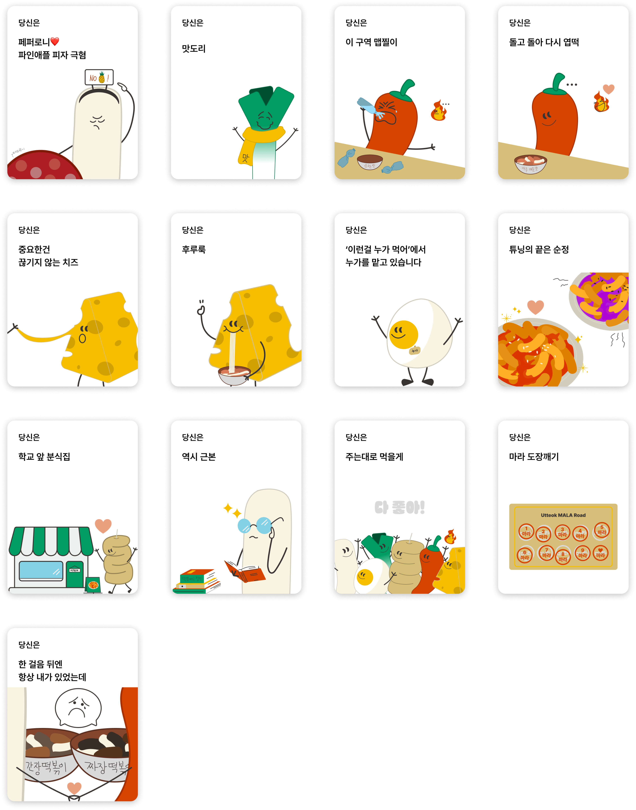
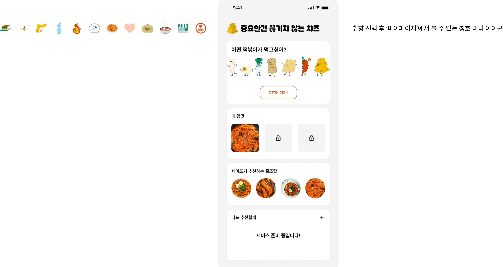
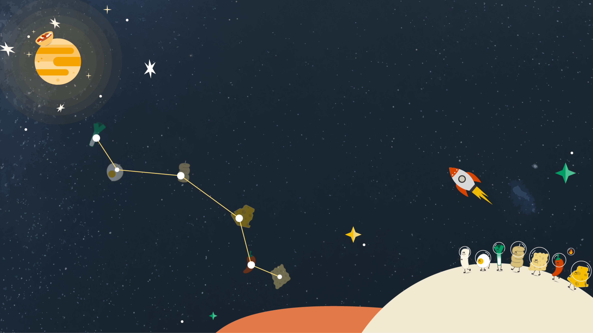
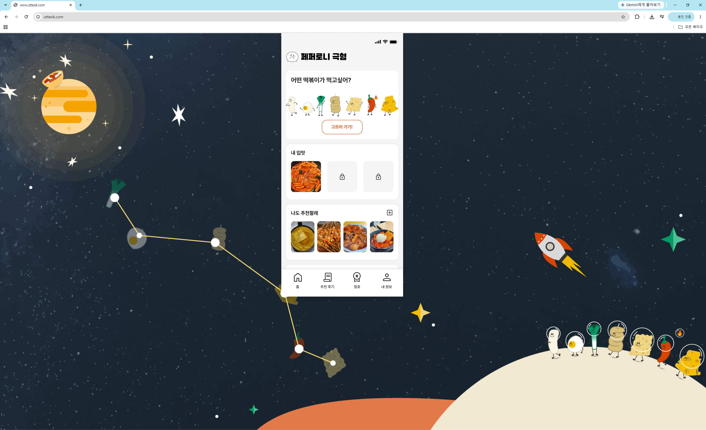

ARCHIVE
어떡 일러스트레이션
2024.01
디자인 100%(일러스트레이터, 포토샵)
Background & Reference
‘어떡’은 수많은 떡볶이 메뉴 속에서 어떤 것을 먹을지 고르지 못하는 떡볶이 러버들을 위한
초개인화 떡볶이 큐레이팅 서비스입니다.
떡볶이가 대한민국의 국민 간식인만큼 친근하면서 귀엽고, 심플한 디자인의 일러스트를 기획하고 디자인했습니다.

Detail
떡볶이의 주재료들을 캐릭터화 했습니다.

More
어떡 앱 내의 주요 콘텐츠가 ‘내 취향 떡볶이 알아보기’인 만큼, 사용자의 리텐션 유도를 위해 게이미피케이션 요소를 더했습니다.
특정 취향을 선택할 경우 칭호를 얻게 되는데, 이 때 얻는 칭호 카드의 일러스트를 제작했습니다.


More
웹앱으로 출시해 모바일 화면에서는 콘텐츠만으로 화면이 꽉 차지만, 데스크탑 환경에서는 콘텐츠만으로는 부족하다는 판단이 들었습니다.
따라서 데스크탑 환경에서 어떡을 이용하는 사용자들에게 동일한 브랜드 가치(친근함, 재미)를 전달하기 위해 데스크탑 화면 전용 배경을 제작했습니다.
어떡의 캐릭터들이 최고의 떡볶이를 찾아 여정을 떠난다는 귀여운 스토리도 담았습니다.

예시화면
